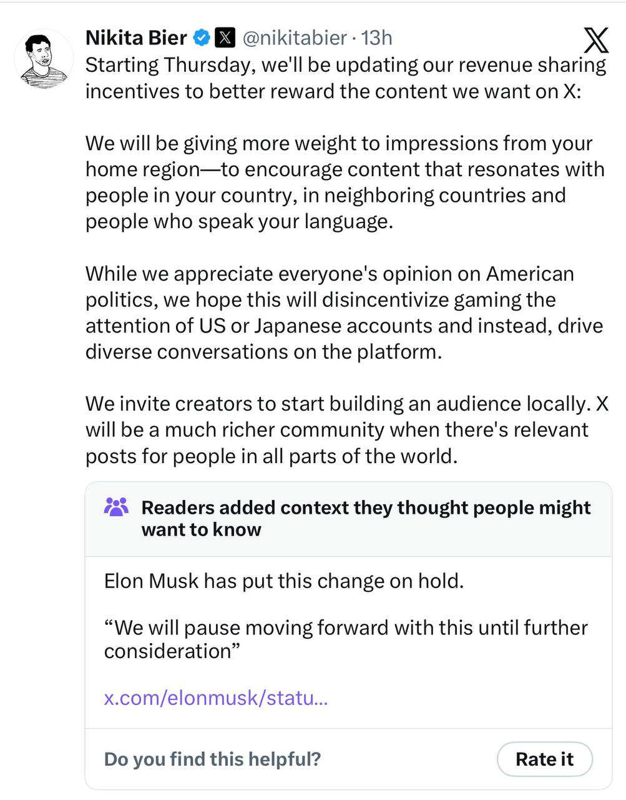

bnwraptor
bnwraptor
On March 24, 2026, X Head of Product Nikita Bier posted an update to the platform's creator monetization system.

Source: Nikita Bier's post on X
The change was designed to crack down on engagement farming. The change was designed to crack down on engagement farming. Specifically, Bier said X would start weighting impressions based on geography — prioritizing audiences in a creator's home region and deprioritizing engagement from the United States and Japan. The stated goal was to discourage creators from targeting foreign audiences purely for payout purposes. Hours later, Elon Musk overruled him. The policy was paused indefinitely. A Community Note on Bier's original post now reads: "Elon Musk has put this change on hold."
That is the headline version of what happened. But the full story reveals something much bigger about how the world works.
The world talks about American politics constantly. Not because it wants to, but because it has to. A policy decision made in Washington can shift currency markets in Jakarta overnight. A change to Federal Reserve interest rates echoes through housing markets in Toronto and São Paulo. A US government contract awarded to a defense company can reshape supply chains on three continents. And a product update from a Silicon Valley company can determine whether a creator in Lagos earns enough to pay rent.
X's monetization drama is the latest example of this brutal dependency. The platform was built in San Francisco. Its rules are decided by people who live in the United States. Its payouts are denominated in US dollars. And its algorithm reflects the economic realities of the American advertising market. When X sneezes, the entire world catches cold — because there is no alternative that comes close to matching its reach.
The Problem X Was Trying to Solve
To understand why X made this change, you have to understand how broken its monetization system has been since the beginning.
When Musk launched the Creator Ads Revenue Sharing program in July 2023, he promised it would let creators "earn a living" on the platform. The reality was different from day one. Payments were only counted from impressions generated by other paying Premium users. If a non-paying user saw your post, you earned nothing from it. The math was circular: a creator had to pay for their own Premium subscription to qualify, then earn from impressions generated by other Premium subscribers, all while advertisers were shown the door and X's revenue model shifted toward creator payouts rather than traditional advertising.
By October 2024, X had dropped ads from the equation entirely. Creators were now paid based on engagement impressions from Premium users. The average rate was roughly $8.50 per million impressions, though actual payouts varied wildly. Some creators reported earning $30 for hundreds of millions of impressions. Others, typically those with right-leaning audiences, reported payouts that seemed wildly disproportionate to their view counts.
The problem was predictable. When you pay people for engagement, they will manufacture engagement. And when $8.50 per million impressions represents a decent wage in India or Nigeria but just pocket change in the United States, you create a massive incentive structure for people in developing markets to figure out how to game the system.
The Abuse Was Rampant
It did not take long for bad actors to figure this out.
In May 2025, X filed a federal lawsuit against eight individuals operating out of Hanoi, Vietnam. The group ran what the complaint described as a "click farm" — programmatically posting computer-generated content to a network of inauthentic accounts created using stolen identities. These accounts would like, repost, and engage with each other's posts to manufacture the appearance of real engagement. X's own "improved authentic engagements algorithm" was fooled into paying out.
The money was funneled through 125 US bank accounts (set up with stolen identities via payment processors PingPong and Payoneer, which fed into Stripe, X's payment processor) and then transferred to nine banks in Vietnam across more than 1,700 individual transactions. X's complaint noted the scheme had been running since at least 2023. The company is seeking disgorgement of all earnings.
In February 2026, X suspended revenue sharing for roughly 80% of Nigerian creators, citing spam and engagement manipulation. The platform's AI tool, Grok, flagged accounts for low-effort content, artificial engagement activity, mass liking, coordinated replies, and repetitive posting designed to inflate metrics. Some creators responded by selling paid guides for 3,000 Nigerian Naira teaching others how to "beat" X's algorithm. The underlying incentive structure had turned into a cat-and-mouse game between X's fraud detection and those trying to exploit it.
Similar patterns emerged in India and across Southeast Asia. Content mills popped up. Engagement groups coordinated likes and reposts. Accounts with stolen profile pictures posted computer-generated content designed to trigger the algorithm. Because the financial reward was real in local economic terms, the risk-reward calculus made sense for many people who had few other options.
What X Proposed and Why It Backfired
Bier's announcement on March 24 was X's attempt to fix this. The solution was geographic weighting. From now on, impressions from your home region would count more toward your payout. Impressions from the US and Japan would count less. The idea was to reward content that resonated locally and stop incentivizing creators to post about American or Japanese topics purely to harvest higher-value impressions.
In a follow-up reply, Bier gave an example: fewer "Ivanka Trump fan accounts based in Nigeria," and more "Nigerians sharing their thoughts about Nigeria." That is when things escalated. Nigerian creators pushed back hard. They argued the policy would destroy legitimate creators who posted in English about technology, sports, politics, or culture — topics with genuinely global audiences. The policy was not just hitting engagement farmers. It was hitting everyone who happened to be outside the US or Japan.
The backlash went beyond Nigeria. Creators in Canada, India, the Philippines, and elsewhere pointed out the same problem: their countries had small domestic X audiences, so building a sustainable income required reaching international viewers. A Canadian creator posting about hockey still needed American and European audiences to generate enough impressions for meaningful payout. The policy would have effectively locked most non-American creators into local-only audiences, which, given lower domestic advertising rates in smaller markets, would have rendered the entire monetization program worthless for them.
Hours after the backlash went viral, Musk posted: "We will pause moving forward with this until further consideration." The policy was dead before it went live.
The Geopolitical Layer Nobody Is Talking About
The Ivanka Trump comment was a mistake. It framed this as a culture war issue — foreigners meddling in American political discourse — when the underlying problem was much simpler: a broken monetization model that X had never figured out how to fix without punishing legitimate creators.
But the geopolitical reality underneath is real, even if Bier did not mean it that way. The United States sets the rules. The rest of the world lives with them.
Consider Canada. American economic policy and political decisions affect Canada more than almost any other country. When the US Federal Reserve raises interest rates, the Bank of Canada faces pressure to follow. When Congress passes trade legislation, Canadian export industries are disrupted. When US political polarization increases, Canadian political discourse absorbs some of that shock. Canadian content creators on X depend on the platform's monetization rules — rules set by an American company, influenced by American political debates, and subject to change based on whatever is happening in Washington or San Francisco that quarter.
Canadians did not vote in the last American election. They have no representatives in Congress. They have no say in whether Elon Musk decides to change how creator payouts work. And yet their livelihoods are directly shaped by those decisions. This is not unique to Canada. It is true for Nigeria, India, Vietnam, the Philippines, Brazil, and most of the world. The US dollar is the world's reserve currency. The US tech sector dominates global platforms. American advertising markets fund the business models of the internet as we know it. When America sneezes, the world catches pneumonia.
X is not the only culprit. Facebook's content moderation decisions — which often reflect American cultural sensitivities around politics, religion, and speech — shape what information circulates in countries where Facebook is the primary internet experience. YouTube's algorithm, built around American viewing patterns, determines which creators in which countries get recommended and monetized. AWS's data center decisions affect which countries get access to low-latency cloud services. The list goes on.
The X monetization episode makes this dynamic visible in a particularly clear way. A product team in California made a decision about how to allocate a finite pool of advertising money. That decision changed income levels for creators in Lagos, Manila, and Toronto. The only reason the policy was reversed was because it became politically embarrassing in the United States. The Nigerian and Indian creators who would have been devastated by it had no mechanism to challenge it except by making enough noise that it reached American political timelines.
The Sentiment Behind Removing the Program Entirely
The frustration is real and growing. A significant portion of the creator community, particularly outside the US, now believes X should simply shut down the monetization program altogether. The argument is straightforward: the program has never worked as advertised, it has been gamed since day one, it disproportionately benefits American and right-leaning creators, it is subject to sudden policy reversals based on US political dynamics, and the administrative burden of compliance with ever-changing rules is not worth the payout.
In October 2025, a viral claim circulated suggesting X was planning to discontinue the program entirely because it had "caused more harm than benefit." X did not confirm or deny it. The fact that the rumor spread so quickly and was believed so readily tells you something about how creators feel about the program.
X's official line is more optimistic. The platform declared 2026 "the year of the creator," announced its highest payouts since the program launched, and promised a $1 million prize for top long-form articles. But promises made in press releases do not change the underlying structural problems: a monetization model built on American advertising economics, a fraud problem that has never been solved, and a governance structure that answers to nobody except the preferences of one person.
The Bigger Picture
The uncomfortable truth is that the world needs American platforms, and American platforms do not particularly care about the rest of the world unless the rest of the world becomes impossible to ignore. X's monetization policy was not reversed because creators in Nigeria and India complained. It was reversed because the Ivanka Trump reference made it a story in American political circles, and Musk decided it was not worth the noise.
That is the dependency the world lives with. Every creator in every country outside the United States is subject to rules they did not write, cannot change, and have no recourse against except viral pressure that only works when American audiences care enough to amplify it.
The monetization program may survive in its current form. It may be changed again next quarter. It may be discontinued. Whatever happens, it will happen on X's timeline, based on X's assessment, driven by X's priorities. The rest of the world's creators will simply have to adapt. That is the brutal reality of depending on American platforms. It is not going to change anytime soon.